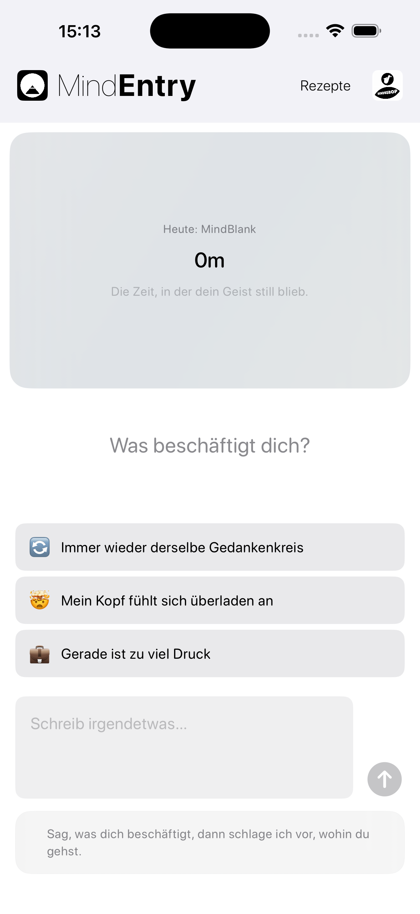
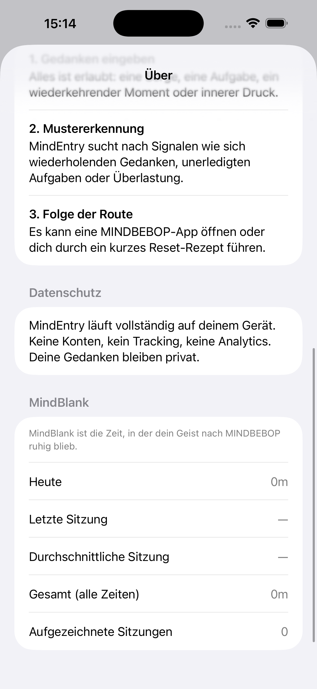

Die Zeit, in der dein Geist ruhig geblieben ist.
MindBlank ist kein Punktestand.
Es ist ein stilles Signal dafür, wie lange Ihr Geist nach dem Abschluss einer MINDBEBOP-Interaktion frei von ungelösten Gedankenschleifen geblieben ist.
Anstatt zu messen, wie lange Sie die Apps nutzen, zeigt MINDBEBOP, wie lange Sie keinen weiteren mentalen Reset benötigt haben.
MINDBEBOP führt eine modulare Architektur ein, um die mentale Hintergrundaktivität zu strukturieren und dir zu helfen, Aufmerksamkeit zurückzugewinnen, die unbemerkt von ungelösten Gedanken gebunden wurde.
Die meisten Apps messen Nutzung. MindBlank misst Abwesenheit.
Dieses ruhige Intervall ist MindBlank.
Eine stille Reflexion geistiger Ruhe.
MindBlank benötigt keine Umfragen, Bewertungen oder Selbsteinschätzungen.
Nachdem Sie eine MINDBEBOP-Interaktion abgeschlossen haben und eine Zeit lang keinen weiteren mentalen Reset benötigen, spiegelt MindBlank dieses Zeitintervall still wider.
Keine Fragen. Keine Bewertungen. Keine Interpretation.
Sie schließen einen Flip in MindFlipOut ab.
Zwei Stunden vergehen, bevor Sie das nächste MINDBEBOP-Werkzeug benötigen.
MindBlank zeigt: 2 Stunden geistiger Ruhe
Stille bedeutet nicht immer Auflösung. Manchmal kehren Gedanken später zurück, wenn sie bereit sind.
MindBlank zeigt lediglich ein ruhiges Intervall — eine Zeitspanne, in der ungelöste Schleifen nicht um deine Aufmerksamkeit baten.
MindBlank ist in MindEntry integriert, dem Einstiegspunkt in das MINDBEBOP Mental Background OS.
Im Laufe der Zeit kann es auch in MindEntryBiz als aggregierte Kennzahl für Organisationen erscheinen.


MindBlank wird in MindEntry angezeigt.
Bei MindBlank geht es nicht um Leistung.
Es geht darum wahrzunehmen, wie lange Ihr Geist ruhig geblieben ist, bevor er den nächsten mentalen Reset benötigte.
Copyright © 2026 MINDBEBOP — All rights reserved.